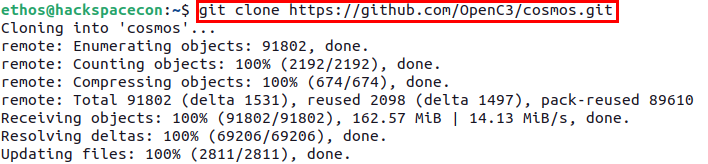
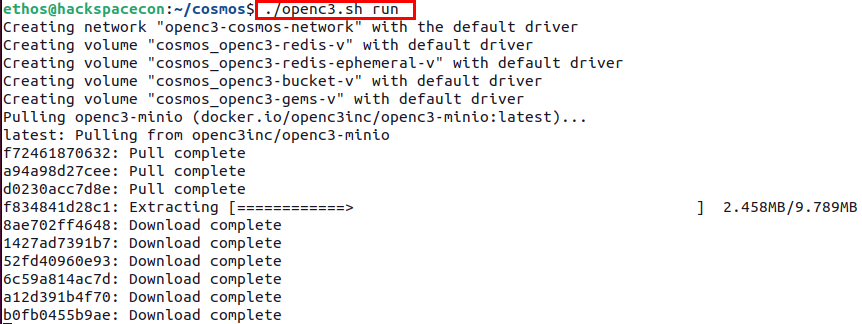
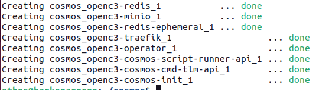
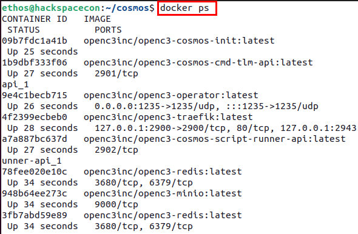
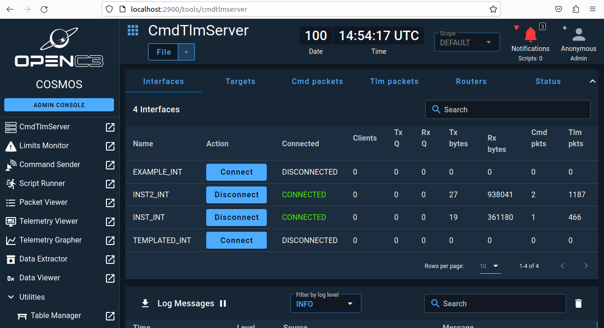

0x01 - OpenC3 Cosmos

OpenC3's COSMOS is a command-and-control system designed for small satellite missions. It is an evolution of the COSMOS software initially developed by Ball Aerospace, which has been widely used in the space industry for satellite command and control. COSMOS provides a comprehensive suite of tools for mission planning, telemetry and command processing, data analysis, and system simulation, making it a versatile solution for managing space missions.
The transition to OpenC3 represents a shift towards a more open and collaborative approach to space mission control software. OpenC3 aims to foster a community where users and developers can contribute to the development and improvement of COSMOS, ensuring it remains a state-of-the-art tool for mission control. This open-source philosophy allows for greater innovation, adaptability, and cost efficiency, as users can customize the software to meet their specific mission requirements without the constraints of proprietary software licenses.
COSMOS under OpenC3 includes features such as:
- Real-time telemetry processing: It can process and display telemetry data in real time, allowing mission operators to monitor the status and health of their spacecraft.
- Command and control capabilities: Operators can send commands to their spacecraft, automate command sequences, and ensure the safety and success of their missions.
- Data analysis and visualization: COSMOS provides tools for analyzing telemetry data, generating reports, and visualizing data trends, which are crucial for mission analysis and decision-making.
- System simulation: It can simulate spacecraft behavior and mission scenarios, helping teams test and validate their operations before execution.
By providing these capabilities within an open-source framework, OpenC3's COSMOS enables a wide range of entities, from small startups to educational institutions and research organizations, to access sophisticated mission control software that was once the domain of large aerospace corporations and government agencies. This democratization of space technology contributes to the growing accessibility of space exploration and utilization.
Deploying OpenC3 COSMOS
OpenC3 COMSOS is going to be the command-and-control system that will be utilized to simulate the Ground Segment in your BYOS virtual environment.
To get started, you must clone the GitHub repository using the following command:

Once you have cloned the repo, you can navigate into the repo using the following command: cd cosmos.
Before deploying COMSOS, you first need to make a modification to the compose.yaml file to allow COSMOS to be able to communicate with the virtual satellites you will be deploying shortly. To make the edits, use the text editor of your choice and edit the compose.yaml file. One such method is using nano.
# ports: in the openc3-operator section, as shown below.
openc3-operator:
user: "${OPENC3_USER_ID:-1001}:${OPENC3_GROUP_ID:-1001}"
image: "${OPENC3_REGISTRY}/${OPENC3_NAMESPACE}/openc3-operator${OPENC3_IMAGE_SUFFIX}:${OPENC3_TAG}"
restart: "unless-stopped"
# ports:
# - "127.0.0.1:7779:7779" # Open port for the demo router
depends_on:

You will need to modify the ports section to look like the snippet below, where ports: is uncommented and the value - "235:1235/udp" below that.
openc3-operator:
user: "${OPENC3_USER_ID:-1001}:${OPENC3_GROUP_ID:-1001}"
image: "${OPENC3_REGISTRY}/${OPENC3_NAMESPACE}/openc3-operator${OPENC3_IMAGE_SUFFIX}:${OPENC3_TAG}"
restart: "unless-stopped"
ports:
- "1235:1235/udp"
# - "127.0.0.1:7779:7779" # Open port for the demo router
depends_on:

If using nano, once you have made the changes, you can save the file with the following key sequence.
CRTL + x, then y to save.
Having modified the compose.yaml file, you are now ready to deploy COSMOS.
To deploy COSMOS, you need to run the openc3.sh shell script using the following command:

It will take some time for the process to run if it is the first time you are running the command, as it will need to download the necessary Docker containers.
Once completed you should see output like what is shown below.
Note
If you get a permission error, try running the previous command with sudo.

You can also confirm that COSMOS is running using the docekr ps command, which will show all the running containers.

Next in a browser in your VM, navigate to http://localhost:2900 and you will be prompted to set a password. Feel free to choose any password you would like. Just make sure to remember it.

After you are logged in, you will see a screen that looks like the following:

Getting the lay of the land
Now that you have logged into COSMOS, it is time to get familiar with it and what it can do.
On the left side of the screen, you will find the primary navigation menu as shown below:
In the main section of your window you will the CmdTlmServer interface that has a row of options called Interfaces,Targets,Cmd packets,Tlm packets,Routers, and Status.
The current deployment of COSMOS includes a demonstration plugin that has four interfaces, two of which will have a status of Connected.
If you see that the packet counts for both Cmd pkts and Tlm pkts increasing, everything is working as expected and data is coming in and from your COSMOS instance. YOu can also look below the CmdTlmServer window to the Log Messages console as shown below to see that data is flowing.
Note
Due to time restrictions, the instructor will walk you through the rest of this section.